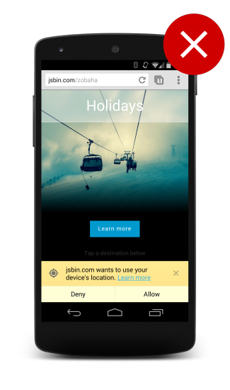
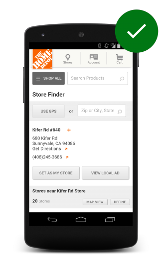
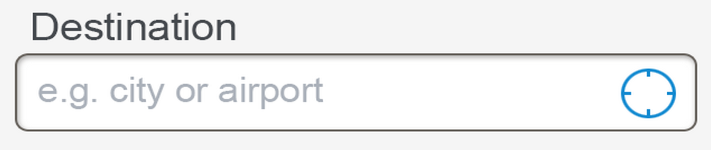
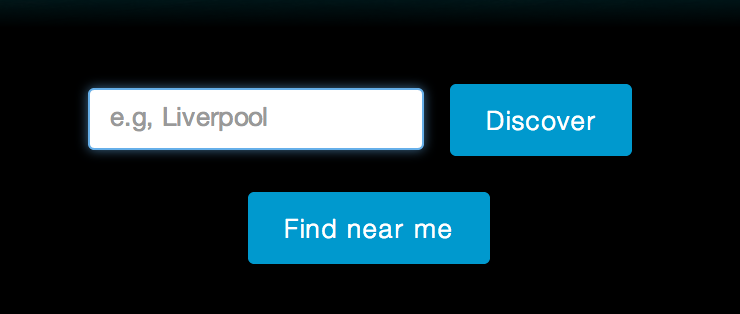

As a web developer, having access to the user's location opens up a huge number of possibilities such as advanced filtering, pinpointing the user on a map, and offering pro-active suggestions on things the user can do based on their current position.
As a user, your physical location is a piece of information you want to
guard and only give out to people that you trust. This is why the browser
shows a prompt when a site asks for your location.
Recent user studies have shown that
users are distrustful of sites that simply prompt the user to give away their
position on page load. So what are the best practices?
TL;DR
Assume users will not give you their location.
Make it clear why you need access to the user's location.
Don't immediately prompt for access on page load.
Assume users will not give you their location
It might be a pain, but many of your users will not want to give you their
location so you need to adopt a defensive development style.
Handle all errors out of the geolocation API so that you can adapt your
site to this condition.
Be clear and explicit about your need for the location.
Use a fallback solution if needed.
Use a fallback if geolocation is required
Our recommendation is to not tie your site or application in to requiring
access to the user’s current location, but if your application or site
absolutely requires it there are 3rd party solutions that allow you to obtain
a best guess of where the person currently is.
These solutions often work by looking at the user’s IP address and mapping that
to the physical addresses registered with the RIPE database. These locations
are often not very accurate normally giving you a position of the nearest
telecommunications hub to the user, or the nearest cell phone tower. In many
cases, they might not even be that accurate, especially if the user is on VPN
or some other proxy service.
Always request access to location on a user gesture
Make sure users understand why you’re asking for their location, and what
the benefit to them will be. Asking for it immediately on the homepage as
the site loads results in a poor user experience.

Asking for it immediately on the homepage as the site loads results in a poor user experience.

Always request access to location on a user gesture.
Instead you should give the user a clear call-to-action or an indication that
an operation will require access to their location. The user will then be able
to more easily associate the system prompt for access with the action
just initiated.
Give clear indication that an action will request their location
In a study by the Google Ads team, when a user was asked to book a hotel room in Boston for an upcoming conference on one particular hotels site, they were prompted to share their GPS location immediately after tapping the ‘Find and Book’ call-to-action on the homepage.
In some cases, the user became frustrated because they struggled to understand why
they were being shown hotels in San Francisco when they wanted to book a room in
Boston.
A better experience is to make sure users understands why you’re asking
them for location. Add in a well known signifier that is common across
devices, such as range finder.

Or consider a very explicit call to action such as “Find Near Me.”

Gently nudge users to grant permission to their location
You don’t have access to any of the steps of what users are doing. You know exactly
when the users disallow access to their location, but you don’t know
when they grant you access; you only know you obtained access when results appear.
It is good practice to “tickle” the user into action if you need them to complete the action.
We recommend:
Setup a timer that will trigger after a short period - 5 seconds is a good value.
If you get an error message, show a message to the user.
If you get a positive response, disable the timer and process the results.
If after the timeout you haven’t got a positive response, show a notification to the user.
If the response comes in later and the notification is still present, remove it from the screen.
button.onclick=function(){varstartPos;varelement=document.getElementById("nudge");varshowNudgeBanner=function(){nudge.style.display="block";};varhideNudgeBanner=function(){nudge.style.display="none";};varnudgeTimeoutId=setTimeout(showNudgeBanner,5000);vargeoSuccess=function(position){hideNudeBanner();// We have the location, don't display bannerclearTimeout(nudgeTimeoutId);// Do magic with locationstartPos=position;document.getElementById('startLat').innerHTML=startPos.coords.latitude;document.getElementById('startLon').innerHTML=startPos.coords.longitude;};vargeoError=function(error){switch(error.code){caseerror.TIMEOUT:// The user didn't accept the calloutshowNudgeBanner();break;};navigator.geolocation.getCurrentPosition(geoSuccess,geoError);};